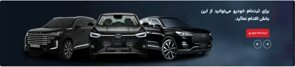

01 / B2C PLATFORMفروش · رشد · تجربه مشتری


Modiran Click ↗
از پورتال خدمات تا سکوی فروش.
وقتی این محصول رو تحویل گرفتم، با نام customer.mvmco.ir بیشتر برای خدمات پس از فروش شناخته میشد. در مدت حضور من، کنار تیمها یک ریبرندینگ بزرگ رو پیش بردیم و مسیر محصول رو به سمت فروش و بازاریابی دیجیتال گسترش دادیم.
روی شناخت فرایندها، اولویتبندی نیازها، هماهنگی تیمها و بهبود تجربه ثبت درخواست و پرداخت کار کردم.
رفتن به سایت1,500 → 5,000+
لید هدفمند در ماه، با یک قابلیت جذب
65% → 92%
موفقیت متقاضیان جدید در ثبت درخواست
76% → 100%
موفقیت پرداخت